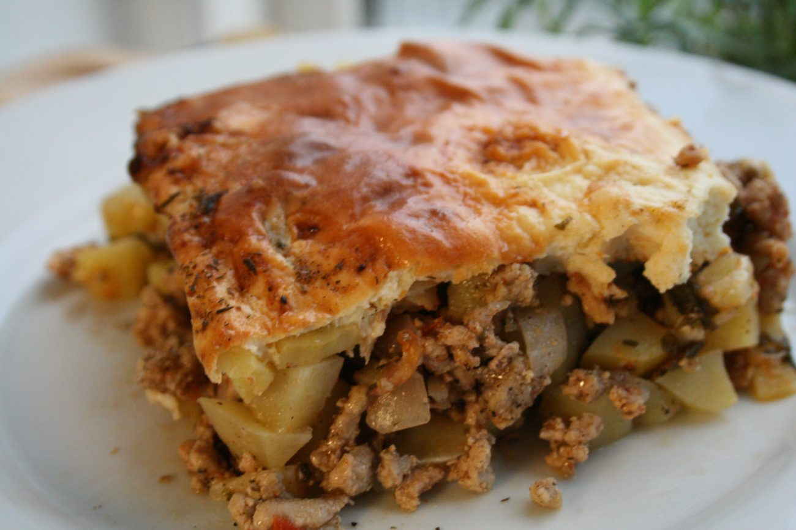
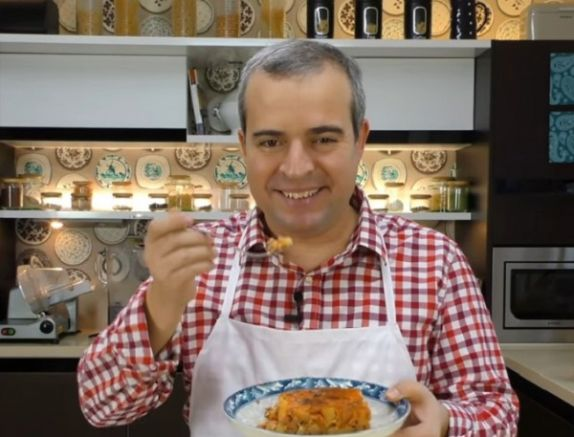

Мусакичка

За тази рецепта
Дойде време и за нея, дами и господа!
Гордостта на всяка българска домакиня!
Всички сме чували за нея, всички я помним от детството и от преди месец.
Всички имаме специално място в сърцата си за нея и тържествуваме когато любимата ни съпруга я сътвори!
Без повече увъртане, дойде време да ви представя - милната и превъзходна Мусакичка!
Съставки
- кайма - 500 гр.
- картофи - 1500 гр.
- лук - 100 гр.
- моркови - 50 гр.
- чушки - 70 гр. червени
- домати - на кубчета от консерва 3 с.л.
- магданоз - пресен 4-5 стръка
- олио - 40 мл.
- кисело мляко за сервиране
- подправки
- сол
- черен пипер
- червен пипер - 2с.л.
- заливка
- кисело мляко - 400 гр.
- яйца - 2 бр.
- брашно - 2 с.л.
- сол
Приготвяне
-
Нарежете лука, чушката и моркова на ситно. Запържете ги с олиото и каймата в тиган.
Бъркайте постоянно, за да се раздроби добре каймата и да стане на трохи. Окусете с червен, черен пипер и сол.
-
Нарежете обелените картофи на кубчета и ги сложете в средно голяма тава. Сипете каймата.
Разбъркайте добре и налейте гореща вода, колкото да се покрият картофите.
-
Гответе в гореща фурна на 200 градуса до омекване на картофите. Добавете доматите и наситнения магданоз. Гответе още около 10 мин.
-
Направете заливката като разбиете добре яйцата с млякото и брашното. Сложете щипка сол и полейте равномерно мусаката.
-
Печете в средата на фурната само на горен реотан до запичане на заливката на мусаката.
-
Сервирайте с лъжица или две кисело мляко.
-
Хапвате и благославяте майка България, нейните народ, традиции и кулинарни рецепти, както и великолепната ви скъпоценна женица!

Обратно към началната страница